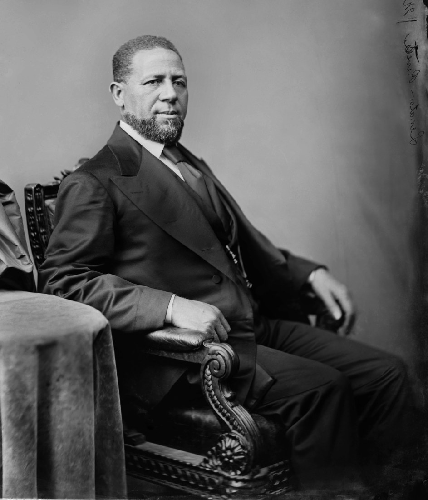

Directions: Read the two records and the background note, then answer the questions.
Background. Congress proposed the Fifteenth Amendment in February 1869, and the states ratified it in February 1870. That same winter the Mississippi legislature elected Hiram Rhodes Revels to the United States Senate. The first record is the amendment's text, from the joint resolution that proposed it. The second is from the speech Revels gave on the Senate floor in February 1871.
"ARTICLE XV. SECTION 1. The right of citizens of the United States to vote shall not be denied or abridged by the United States, or by any State, on account of race, color, or previous condition of servitude. SEC. 2. The Congress shall have power to enforce this article by appropriate legislation."
Source: Joint Resolution proposing the Fifteenth Amendment, as carried in the audited TPSP bank record (Hamilton Fish's certification of ratification, via the National Park Service, as the record's sourceNote names).
"I find that the prejudice in this country to color is very great, and I sometimes fear that it is on the increase. [...] Have the colored people done anything to justify the prejudice against them that does exist in the hearts of so many white persons, and generally of one great political party in this country? Have they done anything to justify it? No, sir. [...] Mr. President, if this prejudice has no cause to justify it, then we must admit that it is wicked, we must admit that it is wrong; we must admit that it has not the approval of Heaven."
Source: Hiram Rhodes Revels, Speech on School Desegregation in the District of Columbia, 1871, as carried in the audited TPSP bank record (Congressional Globe; via BlackFacts and BlackPast, as the record's sourceNote names). Cuts are marked with ellipses.

1. State the amendment's rule and its enforcement power, naming whose right Section 1 protects, the three grounds of denial it forbids, and the body Section 2 arms.
2. The amendment grants the vote to no one outright. Using the lesson's record, state what that silence later allowed, naming the two devices built on it and the feature of their wording that kept them inside the amendment's text.
3. Rebuild Revels's argument: the question he asks twice, his own answer to it, and the three admissions he says follow if prejudice has no justifying cause.
4. A student writes that by 1870 the vote question was settled, because the amendment was ratified and a Black senator sat in Congress. Test the claim against this lesson's record. Name two facts the claim leaves out, one about the amendment's own wording and one about what the new order rested on, and state what each one shows.
1. The rule and the enforcement power. Section 1 protects the right of citizens of the United States to vote, forbidding the United States and any state to deny or abridge it on account of race, color, or previous condition of servitude. Section 2 arms Congress, giving it power to enforce the article by appropriate legislation. Both sections belong in a full answer: the rule is a prohibition on grounds, not a grant, and the enforcement power is the amendment's own answer to states that would evade it. (Blueprint 7)
2. What the silence later allowed. Because the amendment forbids only denial on the three named grounds, states were left free to impose tests naming no racial ground at all, and within a generation southern states built literacy tests and poll taxes on that opening. Their wording carried no racial word, which is what kept them, on their face, inside the amendment's text while closing the polls the amendment had opened. (Blueprint 7)
3. Revels's argument rebuilt. Revels asks, twice, whether the colored people have done anything to justify the prejudice against them, and answers it himself: "No, sir." If prejudice has no cause to justify it, he says, the Senate must admit that it is wicked, must admit that it is wrong, and must admit that it has not the approval of Heaven. The argument's force is its order: the question assigns the burden of proof to prejudice, and the unanswered question does the work before the admissions are drawn. (Blueprint 8)
4. Test the claim of a settled vote. Any two facts, accurately used, one of each kind. About the wording: the amendment grants the vote to no one and forbids only three grounds of denial, leaving literacy tests and poll taxes available to any state willing to write them without a racial word, so the text itself carried the means of its own evasion. About what the order rested on: the electorate, the governments, and Revels's seat itself were all created under federal law, the Reconstruction Acts' registration and the army's presence, and depended on a federal protection the new governments could not supply for themselves, so the settlement stood only while the North kept enforcing it. A ratification and a seated senator are the claim's evidence, and both are real; what they settle is the law's text, not its survival. (Blueprint 8)
Teacher note. This check is formative. Question 3 is the one to read closely: a student who can rebuild Revels's question and admissions holds the strongest statement of the citizenship claim in the lesson. Question 4 separates students who can test a settlement claim against a text's wording and a government's base from students who treat a ratification as a settlement by definition.